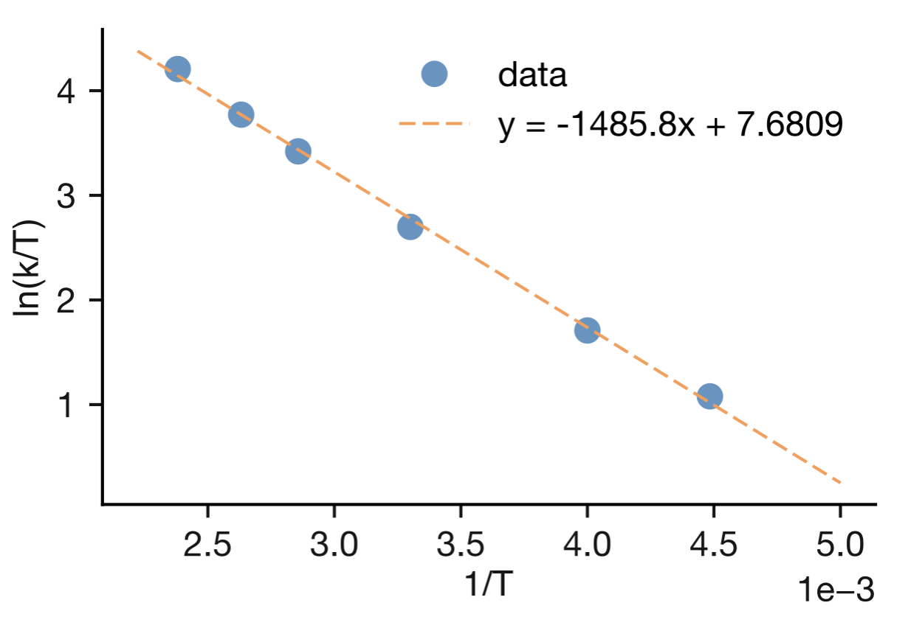

Lecture 9 Applications of Transition State Theory
Over the previous three lectures, we have developed transition state theory as a comprehensive framework for understanding how molecular properties govern reaction rates. Here we explore how this framework connects experimental measurements to transition state structure.
We examine four applications: comparing experimental pre-exponential factors for unimolecular reactions to predictions from degree-of-freedom counting, extracting activation parameters from temperature-dependent rate data, understanding how pressure affects reaction rates, and using kinetic isotope effects to probe bond breaking at transition states. Each demonstrates how transition state theory provides a systematic way to interpret kinetic measurements in molecular terms.
9.1 Unimolecular Reactions
In Lecture 8, we developed a scheme for estimating pre-exponential factors by systematically counting molecular degrees of freedom and using characteristic entropy values for translational, rotational, and vibrational motion. While our analysis focused on bimolecular reactions, we can apply the same approach to unimolecular processes of the form:
\[\begin{equation} \mathrm{A} \rightleftharpoons \mathrm{C}^{\ddagger} \longrightarrow \mathrm{P} \end{equation}\]
9.1.1 The Baseline Estimate
Consider a polyatomic molecule undergoing unimolecular rearrangement or decomposition. The activated complex is simply the reactant molecule distorted along the reaction coordinate, so both reactant and activated complex possess the same number of translational, rotational, and vibrational degrees of freedom—the total degrees of freedom are conserved. This simple picture suggests \(\Delta S^{\ddagger} \approx 0\), leading to a predicted pre-exponential factor of:7
\[\begin{equation} A = \frac{k_\mathrm{B}T}{h}\mathrm{e}^{\Delta S^{\ddagger}/R} \approx \frac{k_\mathrm{B}T}{h} \approx 10^{13}~\mathrm{s}^{-1} \end{equation}\]
However, this picture glosses over an important detail about how we account for these degrees of freedom. If the reactant molecule has n vibrational modes, the transition state also has n vibrational degrees of freedom—but one of these now corresponds to motion along the reaction coordinate. In transition state theory, this reaction coordinate motion provides the \(k_\mathrm{B}T/h\) prefactor rather than contributing to \(\Delta S^{\ddagger}\).
When we count entropy contributions to \(\Delta S^{\ddagger}\), we therefore include only n−1 vibrational modes for the transition state but n vibrational modes for the reactant. We are effectively “losing” the entropy contribution of one vibrational mode—the one that becomes the reaction coordinate.
For a typical vibrational mode at room temperature, \(S_\mathrm{vib} \approx 5~\mathrm{J}~\mathrm{K}^{-1}~\mathrm{mol}^{-1}\). Losing this entropy contribution when forming the transition state gives:
\[\Delta S^{\ddagger} \approx -5~\mathrm{J}~\mathrm{K}^{-1}~\mathrm{mol}^{-1}\]
The predicted pre-exponential factor is therefore:
\[A = \frac{k_\mathrm{B}T}{h} \times \exp\left(\frac{-5}{8.314}\right) \approx 10^{13} \times 0.55 \approx 5 \times 10^{12}~\mathrm{s}^{-1}\]
Even when we properly account for how the vibrational modes are treated, we still obtain \(A \approx 10^{13}~\mathrm{s}^{-1}\) to within the same order of magnitude. This baseline estimate holds provided the remaining n−1 vibrational modes have similar frequencies in the reactant and the transition state, such that their entropy contributions approximately cancel.
9.1.2 Using Pre-exponential Factors to Probe Transition State Structure
The baseline estimate of \(A \approx 10^{13}~\mathrm{s}^{-1}\) provides a useful reference point. When experimental measurements of pre-exponential factors differ significantly from this baseline, those differences tell us about transition state structure. We can quantify this by calculating the entropy of activation from the experimental pre-exponential factor:
\[\Delta S^{\ddagger} = R \ln\left(\frac{hA_\mathrm{expt}}{k_\mathrm{B}T}\right)\]
Comparing this to our baseline prediction of \(\Delta S^{\ddagger} \approx -5~\mathrm{J}~\mathrm{K}^{-1}~\mathrm{mol}^{-1}\) reveals whether the transition state has more or less molecular freedom than expected:
- If \(\Delta S^{\ddagger}\) is more positive than the baseline: the transition state has enhanced molecular freedom—a “loose” transition state
- If \(\Delta S^{\ddagger}\) is more negative* than the baseline: the transition state has reduced molecular freedom—a “tight” transition state
These deviations arise when the structure of the transition state causes the n−1 vibrational modes (those that are not the reaction coordinate) to change significantly in frequency between reactant and transition state. Two contrasting examples illustrate how experimental pre-exponential factors reveal transition state structure.
9.1.2.1 Ethane Decomposition: A Loose Transition State
The thermal decomposition of ethane proceeds via C–C bond cleavage:
\[\begin{equation} \mathrm{C}_2\mathrm{H}_6 \longrightarrow 2\mathrm{CH}_3^\bullet \end{equation}\]
The experimental pre-exponential factor is A = 2 × 1016 s−1. Using this to calculate the entropy of activation:
\[\Delta S^{\ddagger} = R \ln\left(\frac{h \times 2 \times 10^{16}}{k_\mathrm{B}T}\right) \approx +63~\mathrm{J}~\mathrm{K}^{-1}~\mathrm{mol}^{-1}\]
This is substantially more positive than our baseline prediction of −5 J K−1 mol−1. What does this tell us about the transition state structure?
In this reaction, the C–C stretching mode becomes the reaction coordinate, contributing the expected baseline entropy loss. However, the large positive \(\Delta S^{\ddagger}\) indicates that the other vibrational modes gain significant entropy in the transition state. As the C–C bond weakens in forming the transition state, the activated complex becomes “looser” than the intact molecule. Internal rotation around the weakened C–C bond becomes much freer, and the CH3 groups can undergo enhanced rocking and torsional motions. These modes, which were relatively constrained in the reactant, become lower-frequency vibrations in the transition state. The experimental pre-exponential factor thus reveals a loose transition state with enhanced molecular freedom.
9.1.2.2 The Cope Rearrangement: A Tight Transition State
A contrasting example is provided by the Cope rearrangement of 1,5-hexadiene. The experimental pre-exponential factor is A = 4 × 1010 s−1. Calculating the entropy of activation:
\[\Delta S^{\ddagger} = R \ln\left(\frac{h \times 4 \times 10^{10}}{k_\mathrm{B}T}\right) \approx -46~\mathrm{J}~\mathrm{K}^{-1}~\mathrm{mol}^{-1}\]
This is substantially more negative than our baseline prediction. The experimental pre-exponential factor tells us that the transition state has significantly reduced molecular freedom compared to the reactant.![The Cope rearrangement of 1,5-hexadiene proceeds through a constrained cyclic transition state. Left: The reactant possesses considerable internal rotational freedom around the three C–C single bonds (rotation arrows). Centre: The transition state requires a planar, cyclic six-membered ring geometry (red dashed ring) with specific orbital overlap for the [3,3]-sigmatropic shift. Right: The product, with the double bonds in new positions. The constraint of forming this cyclic transition state eliminates the internal rotational freedom present in the reactant.](lecture_9/figures/cope_rearrangement.png)
Figure 9.1: The Cope rearrangement of 1,5-hexadiene proceeds through a constrained cyclic transition state. Left: The reactant possesses considerable internal rotational freedom around the three C–C single bonds (rotation arrows). Centre: The transition state requires a planar, cyclic six-membered ring geometry (red dashed ring) with specific orbital overlap for the [3,3]-sigmatropic shift. Right: The product, with the double bonds in new positions. The constraint of forming this cyclic transition state eliminates the internal rotational freedom present in the reactant.
As shown in Figure 9.1, forming the cyclic transition state imposes geometric constraints on the molecule. The reaction requires precise alignment of the diene termini with specific orbital overlap for the [3,3]-sigmatropic shift, restricting internal rotations that were relatively free in the reactant. These constraints reduce the entropy contributions from the vibrational modes in the transition state. The experimental pre-exponential factor thus reveals a tight, constrained transition state.
9.1.3 The Power of the Comparison
By comparing experimental pre-exponential factors to the baseline prediction from our degree-of-freedom counting scheme, we get insight into the transition state and the reaction mechanism. Deviations from \(A \approx 10^{13}~\mathrm{s}^{-1}\) tell us whether transition states are loose or tight, whether bonds are weakened or geometric constraints are imposed, and how molecular freedom changes along the reaction coordinate. This provides insight into fleeting transition states that we cannot observe directly.
9.2 The Eyring Plot
We have seen how comparing experimental and predicted pre-exponential factors provides information about transition state structure. Another powerful application of transition state theory is extracting activation parameters directly from temperature-dependent rate measurements.
In Lecture 6, we developed the transition state theory expression for the rate constant. This equation, known as the Eyring equation after Henry Eyring who developed transition state theory in the 1930s, connects the rate constant to the activation parameters \(\Delta H^{\ddagger}\) and \(\Delta S^{\ddagger}\):
\[k = \frac{k_\mathrm{B}T}{h}\mathrm{e}^{\Delta S^{\ddagger}/R}\mathrm{e}^{-\Delta H^{\ddagger}/RT}\]
By measuring rate constants at different temperatures, we can extract these activation parameters and learn about the energetic and entropic requirements for reaching the transition state.
The Eyring equation is non-linear in the parameters we want to determine. Modern computational analysis fits such equations directly using non-linear regression, which gives the most accurate parameter estimates. However, you will encounter linearised forms of the Eyring equation throughout textbooks and published literature—this approach became standard before computers were readily available and persists through historical inertia. More practically, you need to understand how to transform equations into linear forms because in examinations, you can plot linearised data and estimate parameters by drawing a line through the points and calculating its slope and intercept. The Eyring plot provides exactly this: a method for transforming the Eyring equation into a form where \(\ln(k/T)\) versus \(1/T\) produces a straight line.
9.2.1 Deriving the Linear Form
To transform the Eyring equation into a linear form, we first divide both sides by \(T\):
\[\frac{k}{T} = \frac{k_\mathrm{B}}{h}\mathrm{e}^{\Delta S^{\ddagger}/R}\mathrm{e}^{-\Delta H^{\ddagger}/RT}\]
Taking the natural logarithm of both sides gives:
\[\ln\left(\frac{k}{T}\right) = \ln\left(\frac{k_\mathrm{B}}{h}\right) + \frac{\Delta S^{\ddagger}}{R} - \frac{\Delta H^{\ddagger}}{RT}\]
Rearranging to separate the temperature-dependent term:
\[\ln\left(\frac{k}{T}\right) = \ln\left(\frac{k_\mathrm{B}}{h}\right) + \frac{\Delta S^{\ddagger}}{R} - \frac{\Delta H^{\ddagger}}{R}\left(\frac{1}{T}\right)\]
This has the form of a straight line:
\[y = c + mx\]
where \(y = \ln(k/T)\), \(x = 1/T\), the intercept is \(c = \ln(k_\mathrm{B}/h) + \Delta S^{\ddagger}/R\), and the slope is \(m = -\Delta H^{\ddagger}/R\).
9.2.2 Extracting Activation Parameters
A plot of \(\ln(k/T)\) versus \(1/T\) is called an Eyring plot. If transition state theory correctly describes the temperature dependence of the rate constant, this plot should be approximately linear. The activation parameters can then be extracted from:8
- Slope = \(-\Delta H^{\ddagger}/R\) → giving \(\Delta H^{\ddagger} = -\text{slope} \times R\)
- Intercept = \(\ln(k_\mathrm{B}/h) + \Delta S^{\ddagger}/R\) → giving \(\Delta S^{\ddagger} = R \times (\text{intercept} - \ln(k_\mathrm{B}/h))\)

Figure 9.2: An Eyring plot for experimental rate constant data measured at different temperatures. The good linear fit through the data points confirms that transition state theory describes the temperature dependence well for this reaction. The activation parameters \(\Delta H^\ddagger\) and \(\Delta S^\ddagger\) can be extracted from the slope and intercept of the fitted line.
Figure 9.2 shows an example Eyring plot. The fitted line has slope \(-1485.8\) K and intercept \(7.6809\). Using \(R = 8.314~\mathrm{J~K^{-1}~mol^{-1}}\), we can calculate:
\[\Delta H^{\ddagger} = -(-1485.8~\mathrm{K}) \times 8.314~\mathrm{J~K^{-1}~mol^{-1}} = 12.4~\mathrm{kJ~mol^{-1}}\]
The intercept provides \(\Delta S^{\ddagger}\) once we account for the \(\ln(k_\mathrm{B}/h)\) term.
9.3 Effect of Pressure on Rate Coefficients
So far, we have examined how temperature affects reaction rates through the Eyring equation. But reactions in solution or the solid state can also be influenced by pressure. How does pressure affect rate constants, and what can we learn about transition states from these pressure effects?
9.3.1 Volume of Activation
Transition state theory provides a framework for understanding pressure effects. When reactants form the activated complex, there is typically a change in volume:
\[\mathrm{A} + \mathrm{B} \rightleftharpoons \mathrm{C}^{\ddagger} \longrightarrow \mathrm{products}\]
The volume of activation, \(\Delta V^{\ddagger}\), is defined as the difference in partial molar volume between the activated complex and the reactants. This volume change affects how pressure influences the reaction rate:
- If \(\Delta V^{\ddagger} < 0\) (activated complex more compact than reactants): increasing pressure favours formation of the activated complex, increasing the reaction rate
- If \(\Delta V^{\ddagger} > 0\) (activated complex more expanded than reactants): increasing pressure disfavours formation of the activated complex, decreasing the reaction rate
The overall reaction rate is proportional to the concentration of the activated complex, \([\mathrm{C}^{\ddagger}]\), so any pressure-induced change in \([\mathrm{C}^{\ddagger}]\) directly affects the rate constant.
9.3.2 Quantitative Treatment
We can develop this idea quantitatively by considering how pressure affects the enthalpy of activation. For reactions where volume changes occur, the enthalpy depends on pressure through:
\[\Delta H^{\ddagger} = \Delta U^{\ddagger} + p\Delta V^{\ddagger}\]
Substituting this into the Eyring equation and taking logarithms:
\[\begin{equation} \ln k = \ln \frac{k_\mathrm{B}T}{h} + \frac{\Delta S^{\ddagger}}{R} - \frac{\Delta U^{\ddagger} + p\Delta V^{\ddagger}}{RT} \tag{9.1} \end{equation}\]
If we differentiate this expression with respect to pressure at constant temperature, we obtain:
\[\left(\frac{\partial \ln k}{\partial p}\right)_T = -\frac{\Delta V^{\ddagger}}{RT}\]
This predicts that a plot of \(\ln k\) versus pressure should be approximately linear, with slope \(-\Delta V^{\ddagger}/RT\). Rearranging this relationship allows us to determine the volume of activation from experimental measurements:
\[\Delta V^{\ddagger} = -RT\left(\frac{\partial \ln k}{\partial p}\right)_T\]
By measuring how the rate constant changes with pressure, we can extract information about the relative volumes of the reactants and the transition state.
9.3.3 Example: Decomposition of Dibutyl Peroxide
Consider the thermal decomposition of dibutyl peroxide, shown in Figure 9.3.Figure 9.3: Decomposition of dibutyl peroxide to form two tert-butoxy radicals. The transition state (centre) shows the O–O bond partially broken (blue dashed line). This bond lengthening requires more volume than the intact O–O bond in the reactant, leading to a positive volume of activation.
Experimental measurements of the pressure dependence give \(\Delta V^{\ddagger}\) = +5.24 × 10−6 m3 mol−1$. This positive volume of activation tells us that the transition state occupies more volume than the reactant. As shown in the figure, the O–O bond is partially broken at the transition state—the bond has lengthened compared to the reactant. This bond stretching increases the volume occupied by the molecule, explaining the positive \(\Delta V^{\ddagger}\).
This demonstrates how the sign and magnitude of the volume of activation provide direct information about geometric changes at the transition state. A negative \(\Delta V^{\ddagger}\) would indicate bond formation or increased compactness, whilst a positive value reveals bond breaking or expansion, as we observe here for peroxide decomposition.
9.4 Kinetic Isotope Effects
As discussed above, temperature and pressure measurements can provide thermodynamic and volumetric information about transition states. A third experimental technique—isotopic substitution—reveals which specific bonds are breaking during reaction.
Many reactions proceed more slowly when hydrogen is replaced by deuterium. For example, consider this E2 elimination reaction (Figure 9.4):
Figure 9.4: E2 elimination of phenylethyl bromide with sodium ethoxide. The hydrogen (orange, rate constant \(k_\mathrm{H}\)) and deuterium (blue, rate constant \(k_\mathrm{D}\)) at the \(\alpha\)-position are removed during the elimination to form ethanol/deuterated ethanol. Experimentally, \(k_\mathrm{H}/k_\mathrm{D}\) = 7.8.
Experimentally, we find \(k_\mathrm{H}/k_\mathrm{D} = 7.8\)—the deuterated compound reacts nearly eight times more slowly than its hydrogen analogue.
Why should this be? The two molecules differ only in the mass of one nucleus—they have identical electronic structures and therefore experience the same potential energy surface during reaction. Our transition state theory analysis has focused on how forming the activated complex changes the number and type of molecular degrees of freedom (translational, rotational, vibrational), which determines \(\Delta S^{\ddagger}\). For these two very similar molecules, we would expect nearly identical \(\Delta S^{\ddagger}\) values and the same \(\Delta H^{\ddagger}\), giving similar rate constants. Yet we observe a substantial kinetic isotope effect.
9.4.1 Zero-Point Vibrational Energy
The explanation lies in the zero-point vibrational energy. While both molecules move on the same potential energy surface, the vibrational energy levels on that surface depend on mass. This means the ground state energy—the energy of the \(v=0\) vibrational level—is different for C–H and C–D bonds. When we account for these zero-point energy differences, the activation barriers measured from the ground states differ even though the potential energy surface is identical for both molecules.
To understand how mass affects vibrational energy, we can model the C–H and C–D bonds as harmonic oscillators. For a harmonic oscillator, the vibrational energy levels are given by:
\[\begin{equation} E_v = \left(v + \frac{1}{2}\right)\sqrt{\frac{k}{\mu}} \end{equation}\]
where \(v\) is the vibrational quantum number, \(k\) is the force constant (determined by the strength of the bond), and \(\mu\) is the reduced mass:
\[\begin{equation} \mu = \frac{m_1m_2}{m_1 + m_2} \end{equation}\]
Even in the ground vibrational state (\(v=0\)), the system retains energy—the zero-point energy. For a C–H bond where carbon is much heavier than hydrogen, we can approximate \(\mu \approx m_\mathrm{H}\), giving:
\[\begin{equation} E_\mathrm{ZPE}(\mathrm{C{-}H}) \approx \frac{1}{2}\sqrt{\frac{k}{m_\mathrm{H}}} \end{equation}\]
When we substitute deuterium, where \(m_\mathrm{D} \approx 2m_\mathrm{H}\), the reduced mass approximately doubles. This changes the zero-point energy:
\[\begin{equation} E_\mathrm{ZPE}(\mathrm{C{-}D}) \approx \frac{1}{2}\sqrt{\frac{k}{2m_\mathrm{H}}} = \frac{1}{\sqrt{2}} \times E_\mathrm{ZPE}(\mathrm{C{-}H}) \end{equation}\]
Figure 9.5: Comparison of vibrational energy levels for C–H and C–D bonds. Both bonds vibrate on identical potential energy curves (same force constant \(k\)). The heavier C–D bond (blue, right) has more closely spaced energy levels than the lighter C–H bond (orange, left), resulting in lower zero-point energy by a factor of \(1/\sqrt{2}\).
Figure 9.5 shows how this works. The potential energy curve—the surface on which the atoms move—is identical for both isotopes. What differs is the quantisation of motion on that surface: the heavier C–D bond has more closely spaced vibrational levels and therefore lower zero-point energy than the C–H bond.
9.4.2 From Zero-Point Energy to Activation Energy
This difference in zero-point energy directly affects the activation barrier. In the reactants, the C–H and C–D bonds have different zero-point energies. At the transition state, if the C–H or C–D bond is essentially completely broken, the vibrational mode associated with that bond no longer exists—it has transformed into motion along the reaction coordinate. Under this assumption, both isotopes reach effectively the same transition state energy: the potential energy surface is identical, and the C–H/C–D vibrational mode that gave different zero-point energies in the reactants no longer contributes at the transition state.
![Reaction coordinate diagram showing how zero-point energy differences create the kinetic isotope effect. The orange and blue curves before the transition state show different energy profiles for the H and D substituted molecules, reflecting their different zero-point energies in the reactants. Assuming the C–H/C–D bond is completely broken at the transition state, both isotopes converge to the same transition state energy (black dot). After the transition state, where the C–H/C–D bond no longer exists, both follow the same energy profile (black curve). This produces $\Delta E^\ddagger_\mathrm{D} > \Delta E^\ddagger_\mathrm{H}$, causing the deuterated compound to react more slowly.](lecture_9/figures/kie_reaction_coordinate.png)
Figure 9.6: Reaction coordinate diagram showing how zero-point energy differences create the kinetic isotope effect. The orange and blue curves before the transition state show different energy profiles for the H and D substituted molecules, reflecting their different zero-point energies in the reactants. Assuming the C–H/C–D bond is completely broken at the transition state, both isotopes converge to the same transition state energy (black dot). After the transition state, where the C–H/C–D bond no longer exists, both follow the same energy profile (black curve). This produces \(\Delta E^\ddagger_\mathrm{D} > \Delta E^\ddagger_\mathrm{H}\), causing the deuterated compound to react more slowly.
As shown in Figure 9.6, the activation energy is the difference between the transition state and the ground vibrational state of the reactant. Because \(E_\mathrm{ZPE}(\mathrm{C{-}D}) < E_\mathrm{ZPE}(\mathrm{C{-}H})\) in the reactants, and both reach the same transition state energy, the deuterated compound faces a larger activation barrier:
\[\begin{equation} \Delta E^\ddagger_\mathrm{D} - \Delta E^\ddagger_\mathrm{H} = E_\mathrm{ZPE}(\mathrm{C{-}H}) - E_\mathrm{ZPE}(\mathrm{C{-}D}) \end{equation}\]
We can quantify this effect. For a typical C–H stretching vibration: - \(E_\mathrm{ZPE}(\mathrm{C{-}H}) = 18.0~\mathrm{kJ~mol^{-1}}\) - \(E_\mathrm{ZPE}(\mathrm{C{-}D}) = 13.2~\mathrm{kJ~mol^{-1}}\)
The difference in activation energies leads to different rate constants:
\[\begin{equation} \frac{k_\mathrm{H}}{k_\mathrm{D}} = \mathrm{e}^{(\Delta E^\ddagger_\mathrm{D} - \Delta E^\ddagger_\mathrm{H})/RT} = \mathrm{e}^{(E_\mathrm{ZPE}(\mathrm{H})-E_\mathrm{ZPE}(\mathrm{D}))/RT} \end{equation}\]
At room temperature (298 K), this gives:
\[\begin{equation} \frac{k_\mathrm{H}}{k_\mathrm{D}} = \mathrm{e}^{(18.0-13.2)\times 10^3/(8.314 \times 298)} = 6.9 \end{equation}\]
This predicts \(k_\mathrm{H}/k_\mathrm{D} \approx 7\) when the C–H bond is completely broken at the transition state—consistent with the experimental value of 7.8 observed in our E2 elimination example. If the bond is only partially broken, or if it remains intact during reaction, the observed isotope effect will be correspondingly smaller.
9.4.3 Using Kinetic Isotope Effects to Probe Reaction Mechanisms
The magnitude of the kinetic isotope effect reveals how much a bond has broken at the transition state. Three scenarios are commonly observed:
- Complete bond breaking at the transition state: \(k_\mathrm{H}/k_\mathrm{D} \approx 7\) (the full zero-point energy difference contributes to the activation barrier)
- Partial bond breaking: \(1 < k_\mathrm{H}/k_\mathrm{D} < 7\) (intermediate extent of bond cleavage)
- Bond remains intact: \(k_\mathrm{H}/k_\mathrm{D} \approx 1\) (the bond does not participate in the rate-determining step)
![Comparison of kinetic isotope effects in E2 eliminations. Top: When H/D is at the $\alpha$-position (being removed during elimination), a large kinetic isotope effect is observed ($k_\mathrm{H}/k_\mathrm{D}$ = 7.8), indicating the C–H bond is almost completely broken at the transition state. Bottom: When H/D is at the $\beta$-position (not involved in the elimination), the kinetic isotope effect is negligible ($k_\mathrm{H}/k_\mathrm{D}$ = 1.09), indicating these C–H bonds remain essentially intact at the transition state.](lecture_9/figures/kie_comparison.png)
Figure 9.7: Comparison of kinetic isotope effects in E2 eliminations. Top: When H/D is at the \(\alpha\)-position (being removed during elimination), a large kinetic isotope effect is observed (\(k_\mathrm{H}/k_\mathrm{D}\) = 7.8), indicating the C–H bond is almost completely broken at the transition state. Bottom: When H/D is at the \(\beta\)-position (not involved in the elimination), the kinetic isotope effect is negligible (\(k_\mathrm{H}/k_\mathrm{D}\) = 1.09), indicating these C–H bonds remain essentially intact at the transition state.
When deuterium is substituted at the α-position—the site where the C–H bond is removed during elimination—we observe \(k_\mathrm{H}/k_\mathrm{D} = 7.8\). This large isotope effect tells us that the C–H bond at this position is almost completely broken at the transition state. The magnitude, close to our predicted value of ~7, indicates that the full zero-point energy difference between C–H and C–D bonds affects the activation barrier.
In contrast, when deuterium is substituted at the β-position, the isotope effect is negligible: \(k_\mathrm{H}/k_\mathrm{D} = 1.09\). This small value shows that the C–H bonds at the β-position remain essentially intact throughout the reaction—they are spectators that do not participate in the rate-determining step. The C–H/C–D zero-point energy difference has virtually no effect on the activation barrier because these bonds are not breaking.
Figure 9.8 illustrates this effect: the vertical separation between the H and D curves remains approximately constant from reactants through the transition state to products, because the β C–H bonds are spectators that never break.
![Reaction coordinate diagram for isotopic substitution at the β-position. The C–H and C–D bonds at this position remain intact throughout the reaction. The zero-point energy difference present in the reactants (vertical separation between the orange and blue curves) persists to the transition state, giving ΔE$^\ddagger$_H ≈ ΔE$^\ddagger$_D and therefore k$_\mathrm{H}$/k$_\mathrm{D}$ ≈ 1. This contrasts with α-position substitution (Figure \@ref(fig:fig-kie-reaction-coordinate)) where the C–H bond breaks at the transition state, causing the curves to converge.](lecture_9/figures/kie_beta_position.png)
Figure 9.8: Reaction coordinate diagram for isotopic substitution at the β-position. The C–H and C–D bonds at this position remain intact throughout the reaction. The zero-point energy difference present in the reactants (vertical separation between the orange and blue curves) persists to the transition state, giving ΔE\(^\ddagger\)_H ≈ ΔE\(^\ddagger\)_D and therefore k\(_\mathrm{H}\)/k\(_\mathrm{D}\) ≈ 1. This contrasts with α-position substitution (Figure 9.6) where the C–H bond breaks at the transition state, causing the curves to converge.
These contrasting results demonstrate the mechanistic power of kinetic isotope effects. By measuring how the reaction rate changes upon isotopic substitution at different positions in the molecule, we can determine which bonds are breaking, which remain intact, and the extent of bond cleavage at the transition state. This provides detailed mechanistic information that would be difficult to obtain by other experimental techniques.
Note the absence of the standard concentration factor \(c^\circ\) in this expression, unlike the bimolecular case where \(A = (k_\mathrm{B}T/hc^\circ)\mathrm{e}^{\Delta S^\ddagger/R}\). For unimolecular reactions, the rate constant has units of s\(^{-1}\) rather than dm\(^3\) mol\(^{-1}\) s\(^{-1}\), so no concentration term is needed for dimensional consistency.↩︎
Whilst the Eyring plot is widely used in literature and essential for examination purposes, modern kinetic analysis should use direct non-linear fitting of the Eyring equation to experimental data. If the errors in experimental rate constant measurements are normally distributed, then fitting the linearised form gives biased estimates of \(\Delta H^{\ddagger}\) and \(\Delta S^{\ddagger}\)—see McCluskey, J. Chem. Educ. 2023, 100, 4174–4176 (DOI: 10.1021/acs.jchemed.3c00466). Non-linear fitting gives unbiased parameter estimates, though it can be numerically unstable. A practical approach is to fit the linear form first, then use these values as starting points for non-linear fitting. When analysing your own kinetic data, use computational tools for non-linear fitting.↩︎